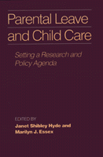

An essential resource for those currently considering laws to establish parental leave and legislation on child care provision
An essential resource for those currently considering laws to establish parental leave and legislation on child care provision


 An essential resource for those currently considering laws to establish parental leave and legislation on child care provision
An essential resource for those currently considering laws to establish parental leave and legislation on child care provision

|  |
Parental Leave and Child CareSetting a Research and Policy Agendaedited by Janet Shibley Hyde and Marilyn J. Essexcloth EAN: 978-0-87722-732-8 (ISBN: 0-87722-732-2) |
The demand and need for maternity disability and parenting policies have increased enormously in the United States over the past decade. With many states currently considering laws to establish parental leave and legislation on child care provision being drafted at state and federal levels, this volume provides an essential resource. Addressing key public policy issues, supplying historical background and cross-cultural comparison, and offering multiple perspectives on this complex debate, Parental Leave and Child Care makes a case for the development of public policy that will support working as well as parenting.
Part I: Overview
1. Parental Leave and Infant Care: U.S. and International Trends and Issues, 1978-1988 – Sheila B. Kamerman
2. Childbirth and Maternal Employment: Data from a National Longitudinal Survey – Patricia Garrett, Sally Lubeck, and DeeAnn Wenk
Part II: Economic Issues
3. Science and Politics: The "Dual Vision" of Feminist Policy Research on Family and Medical Leave – Roberta M. Spalter-Roth and Heidi I. Hartmann
4. Parenting Without Poverty, The Case for Funded Parental Leave – Ann Bookman
Part III: Legal Issues
5. Legal Aspects of Parental Leave: At the Crossroads – Susan Deller Ross
6. Legal Aspects of Child Care – Lucinda M. Finley
Part IV: Perspectives on Work and Society
7. Family Leave: The Need for a New Minimum Standard – Ellen Bravo
8. The Labor Movement's Role in Parental Leave and Child Care – Carolyn York
9. The Wisconsin Family and Medical Leaves Act: States Resolving the Conflict Between Parenthood and Livelihood – John R. Plewa
10. The Place of Caregiving Work in Contemporary Societies – Deanne Bonnar
Part V: Employers' Experiences
11. Employers' Parental Leave Policies: Does the Labor Market Provide Parental Leave? – Eileen Trzcinski
12. How Does the Employer Benefit from Child Care? – Jules M. Marquart
13. Employers' Child Care Policies: Sick Child Care – Mary Dunn
14. Family Leave Policymaking in a Mid-Sized Professional Firm: A Case Study – Linda M. Clifford
Part VI: Parental Leave and Its Effects on Women's and Men's Health
15. The Wisconsin Parental Leave Study: Maternity Leave and the Health of Women and Their Families – Janet Shibley Hyde and Roseanne Clark
16. The Wisconsin Parental Leave Study The Roles of Fathers – Marilyn J. Essex and Marjorie H. Klein
17. Factors Influencing Recovery from Childbirth – Lorraine Tulman and Jacqueline Fawcett
Part VII: Infants and Infant Care
18. The Timing of Mothers' Return to the Workplace: Effects on the Developing Mother-Infant Relationship – Marsha Weinraub and Elizabeth Jaeger
19. Supporting Optimal Parenting Behaviors During Infancy – Lynne Sanford Koester
20. The Child Care Preferences of Parents with Young Children: How Little Is Known – Freya L. Sonenstein
21. The Regulation Controversy in Family Day Care: The Perspective of Providers – Margaret K. Nelson
Part VIII: Historical and Cross-Cultural Perspectives
22. Equal Parenthood and Social Policy: Lessons from a Study of Parental Leave in Sweden – Linda Haas
23. The Political History of Parental Leave Policy – Dorothy McBride Stetson
24. Parental Leave and Child Care in China – Li Min
25. Cultural Values, Child Care, and Parenting: The Italian Experience in Anthropological Perspective – George Saunders
Appendix A: Task Force Recommendations
Appendix B: Summary of Current State Laws on Family Leave; Women's Legal Defense Fund
Janet Shibley Hyde is Professor of Psychology and Director of the Women's Studies Research Center at the University of Wisconsin, Madison.
Marilyn J. Essex is Associate Scientist in the Women's Research Center and the Department of Psychiatry at the University of Wisconsin, Madison.
Women in the Political Economy, edited by Ronnie J. Steinberg.
No longer active.
Women in the Political Economy, edited by Ronnie J. Steinberg, includes books on women and issues of work, family, social movements, politics, feminism, and empowerment. It emphasizes women's roles in society and the social construction of gender and also explores current policy issues like comparable worth, international development, job training, and parental leave.
© 2015 Temple University. All Rights Reserved. This page: http://www.temple.edu/tempress/titles/692_reg.html.